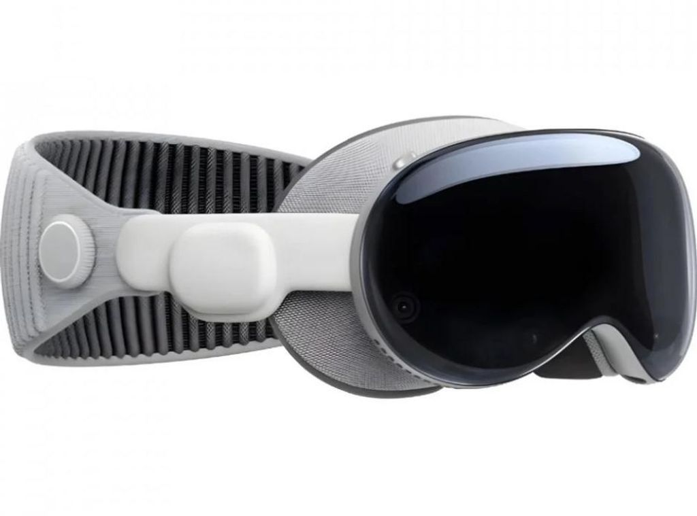

|
 |
Apple Vision Pro
Apple Vision Pro è il primo computer spaziale di Apple.
Integra perfettamente contenuti digitali e mondo reale,
permettendo di controllare app e contenuti tramite occhi,
mani e voce, offrendo un’esperienza immersiva e naturale
come mai prima d’ora.
|
|
Specifiche & Compatibilità
|
|
|
Specifiche principali
|
Compatibilità
Prezzo:
7000€
|